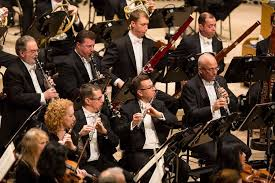

|
|  |
| This is what a traditional orchestra looks like. | This is what a traditional woodwind section looks like. |
| Click here to learn about the flute |
| Click here to learn about the oboe |
| Click here to learn about the clarinet |
| Click here to learn about the bassoon |